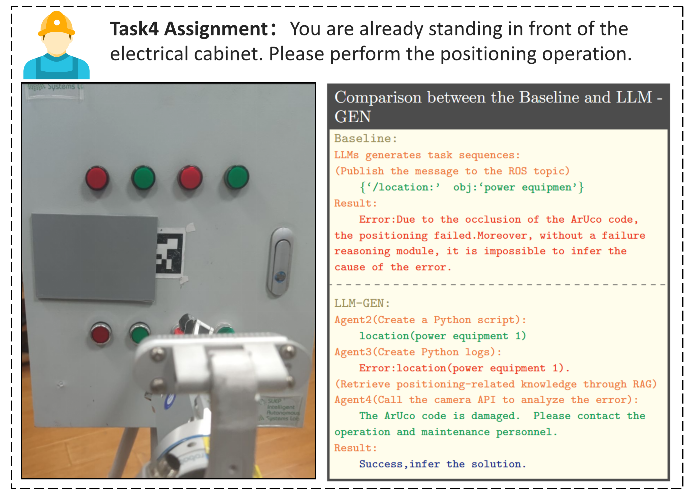
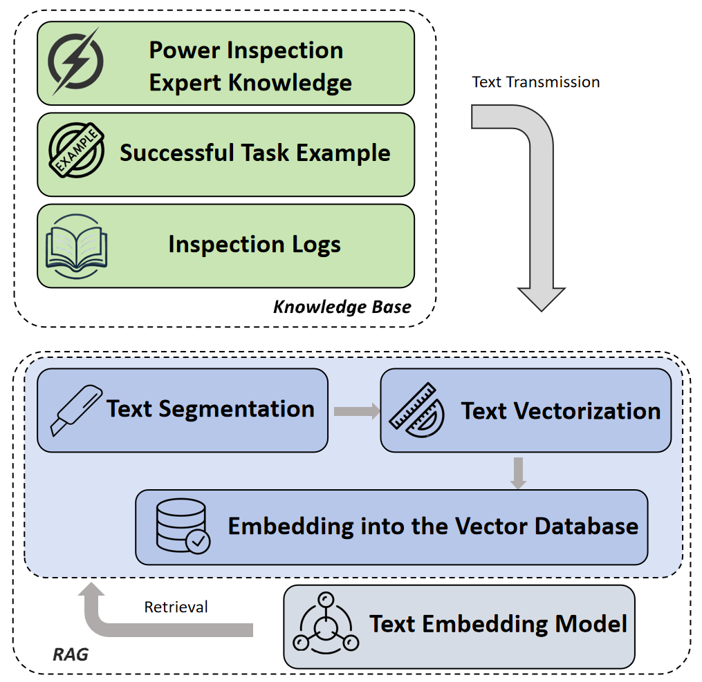

At present, power inspection robots are capable of accomplishing inspection tasks by manually devising symbolic sequences. Nevertheless, the manual design of repetitive and analogous task sequences is not only laborious but also inefficient. To tackle this challenge, we introduce LLM-GEN, a cutting-edge multi-agent TAMP framework underpinned by LLMs. This framework empowers the autonomous planning and execution of agent operations in power inspection scenarios.
LLM-GEN harnesses RAG technology to integrate the knowledge base of power inspection experts with the autonomous reasoning capabilities of large language models. It can independently generate appropriate task sequences for a variety of tasks in power inspection scenarios, including meter status detection, switch pressing operations, and circuit breaker opening and closing. In comparison to our baseline approach, LLM-GEN remarkably enhances the success rate of task generation and broadens the spectrum of adaptable tasks.
generation and broadens the spectrum of adaptable tasks. Moreover, we capitalize on the reasoning prowess of large language models to develop a fault reasoning module. This module can meticulously analyze the causes of task execution failures based on operation logs and facilitates the resumption of tasks from the point of interruption. Experimental validation through actual deployment and implementation on physical robots underscores the practical application value of LLM-GEN in industrial settings.
We repeatedly execute complex tasks in cycles. The new method demonstrates better task reliability compared with previous approaches.
Tasks involving logical judgment determine which operation to take by assessing the light combinations of the electrical cabinets.
A closed-loop feedback mechanism is established to infer the reasons for failures based on operation and maintenance logs and the fault query interface.
A closed-loop feedback mechanism is established to infer the reasons for failures based on operation and maintenance logs and the fault query interface.
A closed-loop feedback mechanism is established to infer the reasons for failures based on operation and maintenance logs and the fault query interface.
@article{park2021nerfies,
author = {Park, Keunhong and Sinha, Utkarsh and Barron, Jonathan T. and Bouaziz, Sofien and Goldman, Dan B and Seitz, Steven M. and Martin-Brualla, Ricardo},
title = {Nerfies: Deformable Neural Radiance Fields},
journal = {ICCV},
year = {2021},
}